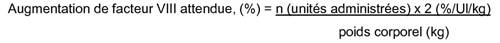
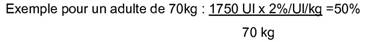
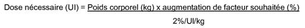
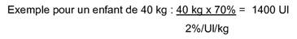
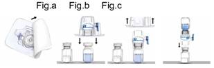
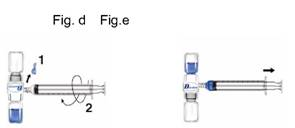

RÉSUMÉ DES CARACTÉRISTIQUES DU PRODUIT
ANSM - Mis à jour le : 23/06/2009
RECOMBINATE 1000 U.I, poudre et solvant pour solution injectable
2. COMPOSITION QUALITATIVE ET QUANTITATIVE
Octocog alfa 100 UI par ml de solution reconstituée
Après reconstitution: Un flacon de 10 ml contient 1000 UI d'octocog alfa
Recombinate 1000 UI contient nominalement 1000 UI d'octocog alfa (facteur VIII de coagulation recombinant) par flacon.
Le produit contient approximativement 100 UI/ml d'octocog alfa; après reconstitution avec 10 ml d'eau stérile pour préparations injectables.
L'activité est déterminée par le dosage chromogénique décrit dans la Pharmacopée Européenne par rapport à la référence Mega de la FDA calibré par à la référence de l'OMS. L'activité spécifique est d'environ 4000-8000 UI/mg de protéine.
Recombinate contient du facteur VIII de coagulation recombinant, (DCI = octocog alfa). L'octocog alfa (facteur VIII de coagulation recombinant) est une protéine purifiée, formée de 2332 acides aminés. Il présente une séquence d'acides aminés comparable à celle du facteur VIII et des modifications post-translationnelles identiques à celles de la molécule d'origine plasmatique. Le facteur VIII de coagulation recombinant est une glycoprotéine exprimée par des cellules de mammifères génétiquement modifiées, dérivées d'une lignée cellulaire d'ovaire de hamster chinois (CHO).
Pour la liste complète des excipients, voir rubrique 6.1.
Poudre et solvant pour solution injectable
Poudre friable de couleur blanche à légèrement grise. Le solvant (eau pour préparations injectables stérilisée) est un liquide clair et incolore.
4.1. Indications thérapeutiques
Traitement et prévention des épisodes hémorragiques chez les patients atteints d'hémophilie A (déficit congénital en facteur VIII).
Ce produit ne contient pas de Facteur von Willebrand, par conséquent il n'est pas indiqué dans la maladie de von Willebrand.
4.2. Posologie et mode d'administration
4.2.1 Posologie
La posologie et la durée du traitement substitutif dépendent de la sévérité du trouble de l'hémostase, de la localisation, de l'importance des épisodes hémorragiques et de l'état clinique du patient.
Le traitement doit être réalisé en collaboration avec un médecin expérimenté dans le traitement des désordres hémorragiques et un laboratoire habilité à doser l'activité coagulante plasmatique du Facteur VIII (FAH).
La dose de Facteur VIII administrée est exprimée en Unités Internationales (UI), ramenées au standard actuel de l'OMS pour les produits de Facteur VIII. L'activité coagulante en facteur VIII dans le plasma est exprimée soit en pourcentage (par rapport au plasma humain normal), soit en Unités Internationales (par rapport au Standard international du Facteur VIII plasmatique). Une UI d'activité coagulante du Facteur VIII correspond à la quantité de Facteur VIII contenue dans un ml de plasma humain normal.
Le pic attendu in-vivo du taux de facteur anti-hémophilique recombinant exprimé en Ul/dl de plasma ou en % (pourcentage) de la normale peut être calculé en multipliant par deux la dose administrée par kg de poids corporel (UI/kg).
La méthode de calcul est illustrée par les exemples suivants:


ou


Une surveillance étroite du traitement substitutif est particulièrement importante dans les cas de chirurgie majeure ou d'hémorragies avec un risque vital. Bien que la posologie puisse être estimée par les calculs présentés ci-dessus, il est fortement recommandé, chaque fois que possible, de réaliser des dosages biologiques incluant le dosage du FAH sur le plasma du patient, à des intervalles de temps permettant de s'assurer que les taux de FAH adéquats sont atteints et sont maintenus au cours du traitement. Si le FAH plasmatique du patient ne peut atteindre les valeurs attendues ou si le saignement n'est pas contrôlé après administration d'une dose adéquate, la présence d'un inhibiteur doit être suspectée. En réalisant des tests biologiques appropriés, la présence d'un inhibiteur peut être révélée et l'inhibiteur quantifié en Unités Internationales de FAH neutralisées par chaque ml de plasma (unités Bethesda) ou par le volume total plasmatique estimé.
Si l'inhibiteur est présent à des taux inférieurs à 10 Unités Bethesda par ml, l'administration d'une quantité de FAH supplémentaire peut neutraliser l'inhibiteur. Cependant, l'administration d'une quantité d'Unités Internationales de FAH supplémentaire doit entraîner la réponse prévue. Le contrôle du taux de FAH par des tests biologiques est nécessaire dans ce cas. Un titre d'inhibiteur supérieur à 10 Unités Bethesda par ml peut rendre le contrôle de l'hémostase par FAH impossible ou difficile car des doses trop importantes sont alors nécessaires.
L'utilisation de Recombinate est appropriée chez les enfants de tous âges, y compris les nouveaux-nés (des études de sécurité et d'efficacité ont été réalisées aussi bien chez des enfants préalablement traités que chez des enfants non préalablement traités; voir section 5.1).
Le schéma de posologie présenté dans le Tableau I peut être utilisé à titre indicatif chez les adultes et les enfants. La dose à administrer et la fréquence des perfusions doivent toujours être orientées par l'efficacité clinique chez chaque patient.
RECOMBINATE peut également être administré en prophylaxie (à court ou long terme) des épisodes hémorragiques suivant la prescription propre à chaque malade faite par le médecin.
TABLEAU I: Schéma de posologie
|
HEMORRAGIE |
||
|
Degré de l'hémorragie |
Pic d'activité du FAH post-perfusion, nécessaire dans le sang# (% de la normale ou UI/Dl de plasma)* |
Fréquence des perfusions |
|
Début d'hémarthrose ou de saignement musculaire ou buccal |
20 à 40 |
Perfusion à renouveler éventuellement toutes les 12 à 24 heures pendant 1-3 jours jusqu'à ce que l'épisode hémorragique évalué en fonction de la douleur soit résolu ou jusqu'à la cicatrisation |
|
Hémarthrose, hémorragie musculaire ou hématome plus important |
30 à 60 |
Renouveler la perfusion toutes les 12 à 24 heures pendant 3 jours généralement jusqu'à disparition de la douleur et de l'invalidité |
|
Hémorragies mettant en jeu le pronostic vital telles que saignement intracrânien, hémorragie pharyngée, saignement abdominal sévère |
60 à 100 |
Renouveler la perfusion toutes les 8 à 24 heures jusqu'à disparition du risque vital |
|
CHIRURGIE |
||
|
TYPE D'INTERVENTION |
|
Fréquence des perfusions |
|
Chirurgie mineure, incluant les extractions dentaires |
30 à 60 |
Une seule perfusion plus un traitement oral anti-fibrinolytique pendant l'heure qui suit sont suffisants dans environ 70 % des cas. Toutes les 24 heures, au moins une journée jusqu'à obtention de la cicatrisation. |
|
Chirurgie majeure |
80 à 100 |
Renouveler la perfusion toutes les 8 à 24 heures jusqu'à cicatrisation de la plaie. |
#Ceci représente le pic d'activité FAH pour des patients chez lesquels la demi-vie du facteur VIII correspond à la moyenne attendue. Si nécessaire, le pic d'activité peut être mesuré dans la demi-heure suivant l'administration. Pour des patients chez lesquels la demi-vie du facteur VIII est relativement courte, il peut être nécessaire d'augmenter les doses et/ou la fréquence d'administration.
*Sur l'étiquette de chaque flacon de RECOMBINATE, est indiquée l'activité exprimée en UI/flacon. Le titre a été donné par rapport au Standard International de l'Organisation Mondiale de la Santé pour les concentrés de facteur VIII:C.
Des expériences ont montré que pour obtenir des taux d'activité précis, la mesure du titre devait être réalisée en utilisant des tubes et des pipettes en plastique ainsi qu'un substrat contenant des taux normaux de facteur von Willebrand.
Pour le traitement prophylactique à long terme des épisodes hémorragiques chez les patients atteints d'hémophilie A sévère, les posologies habituelles sont de 20 à 40 UI de Facteur VIII par kg de poids corporel à des intervalles de 2 à 3 jours. Dans certains cas, en particulier chez les sujets jeunes, des intervalles plus courts ou des doses plus importantes peuvent être nécessaires.
L'apparition d'inhibiteur anti-Facteur VIII doit être surveillée chez les patients. Si les taux souhaités d'activité coagulante plasmatique du Facteur VIII ne sont pas atteints ou si les épisodes hémorragiques ne sont pas contrôlés après administration d'une dose appropriée, un test doit être effectué pour déterminer si un inhibiteur de facteur VIII est présent. Chez les patients présentant des titres élevés d'inhibiteur, il se peut que le traitement par Facteur VIII ne soit pas efficace et qu'il faille envisager d'autres alternatives thérapeutiques. La prise en charge de tels patients doit être effectuée par des médecins spécialisés dans le traitement de l'hémophilie. Voir également rubrique 4.4.
4.2.2 Mode d'administration
Le produit doit être administré par voie intraveineuse après reconstitution avec le diluant fourni (Voir la rubrique 6.6). Il est recommandé de commencer l'administration dans les 3 heures suivant la reconstitution. Le produit reconstitué ne doit pas être réfrigéré. La préparation peut-être administrée à une vitesse maximale de 10 ml/minute. Le pouls doit être pris avant et pendant l'administration de facteur anti-hémophilique recombinant. Si une augmentation importante de la fréquence du pouls apparaît, le ralentissement de la vitesse de perfusion ou l'interruption temporaire de l'injection entraîne généralement la disparition rapide des symptômes (voir les paragraphes 4.4 et 4.8).
Hypersensibilité à la substance active ou à l'un des excipients. Réaction allergique connue aux protéines d'origine bovine, de souris ou de hamster.
4.4. Mises en garde spéciales et précautions d'emploi
Des réactions allergiques sévères ont été rapportées avec RECOMBINATE. Les patients présentant une hypersensibilité connue aux protéines bovines, de souris ou de hamster doivent être traités avec prudence. Les patients doivent être informés des signes précoces des réactions d'hypersensibilité, tels que l'urticaire, l'urticaire généralisée, l'oppression thoracique, la respiration sifflante, l'hypotension et l'anaphylaxie Si des réactions allergiques ou anaphylactiques apparaissent, l'injection/perfusion doit être arrêtée immédiatement. Le traitement symptomatique de l'état de choc devra être instauré.
Si les taux plasmatiques de facteur VIII ne peuvent atteindre les taux souhaités ou si le saignement n'est pas contrôlé après administration d'une dose adéquate, il est nécessaire de réaliser des tests biologiques pour détecter la présence d'un inhibiteur.
L'apparition d'anticorps neutralisants (inhibiteurs) du Facteur VIII est une complication connue du traitement des patients atteints d'hémophilie A. Ces inhibiteurs sont habituellement des immunoglobulines G dirigées contre l'activité coagulante du Facteur VIII et sont mesurées en Unités Bethesda par ml de plasma par le test de Bethesda modifié. Le risque de développer des inhibiteurs est corrélé à la durée de l'exposition au Facteur VIII, le risque étant le plus élevé au cours des 20 premiers jours d'exposition, et à d'autres facteurs génétiques et environnementaux. Rarement, les inhibiteurs peuvent apparaître après les 100 premiers jours d'exposition. Des cas de réapparition d'inhibiteurs (faible titre) ont été observés après le changement d'un facteur VIII recombinant pour un autre, chez des patients préalablement traités ayant plus de 100 jours d'exposition et qui avaient un historique de développement d'inhibiteur.
L'apparition d'inhibiteurs doit être surveillée avec précaution chez les patients traités avec un facteur VIII de coagulation recombinant par un suivi clinique et à l'aide de tests biologiques appropriés. Voir également rubrique 4.8.
Ce médicament contient 1,5 mmol de sodium par présentation. A prendre en compte par les patients suivants un régime contrôlé en sodium.
4.5. Interactions avec d'autres médicaments et autres formes d'interactions
Aucune interaction avec d'autres médicaments n'a été observée.
Aucune étude des effets sur la reproduction animale n'a été réalisée avec RECOMBINATE. On ne sait donc pas si RECOMBINATE a une action délétère sur le développement fœtal lorsqu'il est administré à une femme enceinte ou s'il peut perturber les capacités de reproduction. RECOMBINATE ne doit être administré à une femme enceinte qu'en cas d'absolue nécessité.
4.7. Effets sur l'aptitude à conduire des véhicules et à utiliser des machines
Aucun effet sur l'aptitude à conduire des véhicules et à utiliser des machines n'a été observé.
Le tableau suivant présente les effets indésirables rapportés lors de la notification spontanée et au cours des études cliniques. Dans chaque groupe de fréquence, les effets indésirables sont présentés par ordre décroissant de gravité.
La fréquence a été évaluée selon les critères suivants: très fréquent (≥1/10), fréquent ( ≥1/100 à <1/10), peu fréquent (≥ 1/1 000 à <1/ 100), rare ( ≥1/10 000 à < 1/1 000), très rare (<1/10 000) et fréquence indéterminée (ne peut être estimée sur la base des données disponibles).
|
Norme MedDRA |
Fréquence |
Termes MedDRA usuels |
|
Infections et infestations |
Peu fréquent |
Otite |
|
Affections hématologiques et du système lymphatique |
Fréquent |
Inhibition du facteur VIII1 |
|
Affections du système immunitaires |
Fréquence indéterminée |
Choc anaphylactique |
|
Affections du système nerveux |
Peu fréquent |
Etourdissement |
|
Fréquence indéterminée |
Syncope |
|
|
Affections cardiaques |
Fréquence indéterminée |
Cyanose |
|
Affections vasculaires |
Peu fréquent |
Epistaxis |
|
Affections respiratoires, thoraciques et médiastinales |
Peu fréquent |
Douleur Pharyngolaryngée |
|
Fréquence indéterminée |
Dyspnée |
|
|
Affections gastro-intestinales |
Peu fréquent |
Nausée |
|
Fréquence indéterminée |
Vomissement |
|
|
Affections de la peau et du tissus sous-cutané |
Peu fréquent |
Hyperhydrose |
|
Fréquence indéterminée |
Urticaire Exfoliation de la peau |
|
|
Affections musculo- squelettiques et systémiques |
Peu fréquent |
Douleur aux extrémités |
|
Troubles généraux et anomalies au site d'administration |
fréquent |
Frissons |
|
Peu fréquent |
Fatigue |
|
|
Investigations |
Peu fréquent |
Test de stimulation acoustique anormal |
1Dans l'étude clinique portant sur des patients préalablement traités, aucun des 71 patients n'a développé d'inhibiteurs de novo à l'encontre du facteur VIII. En revanche, 22 patients non préalablement traités sur 72 évaluables en per protocol et traités par Recombinate, ont développé un inhibiteur contre le facteur VIIII et la fréquence ci-dessus était basée sur les données observées chez les patients non préalablement traités. Sur les 22 patients, 10 présentaient un titre d'inhibiteurs élevé (≥ 5 unités bethesda) et 12 présentaient un titre d'inhibiteurs faible (< 5 unités bethesda).
2Des signes précoces de réactions d'hypersensibilité sont possibles: urticaire, dyspnée, toux, oppression thoracique, respiration asthmatiforme, anaphylaxie, rash, hypotension, prurit, frissons, bouffée congestive, fièvre, cyanose, tachycardie, vomissement, syncope, maux de tête.
La plus grande prudence est recommandée chez les patients ayant des réactions allergiques connues aux constituants de la préparation (voir les rubriques 4.3 et 4.4).
L'apparition d'inhibiteurs, anticorps neutralisants anti-Facteur VIII, est une complication connue du traitement des patients atteints d'hémophilie A. Ces inhibiteurs sont toujours des IgG dirigées contre l'activité procoagulante du Facteur VIII, dont le titre est exprimé en unités Bethesda (U.B.) par ml de plasma.
Le risque de développement d'inhibiteur est corrélé au temps d'exposition du patient au facteur VIII anti-hémophilique, le risque étant plus important au cours des 20 premiers jours d'exposition. L'incidence des anticorps rapportée chez des patients atteints d'hémophilie A sévère, à haut risque de développer un inhibiteur (c'est-à-dire patients non préalablement traités) est de 31 % pour le RECOMBINATE, ce taux qui se situe dans les limites des valeurs rapportées pour le facteur anti-hémophilique d'origine plasmatique. Les patients traités avec RECOMBINATE doivent être étroitement surveillés sur le plan clinique et biologique en ce qui concerne le développement des anticorps inhibiteurs.
Aucun cas de surdosage n'a été rapporté.
5. PROPRIETES PHARMACOLOGIQUES
5.1. Propriétés pharmacodynamiques
Groupe pharmacothérapeutique: antihémorragique: Facteur VIll de coagulation. Code ATC: B02BD02
Le facteur antihémophilique est le facteur spécifique de coagulation déficient chez les patients atteints d'hémophilie A (déficit congénital en facteur VIII). L'hémophilie A est une anomalie de la coagulation d'origine génétique, caractérisée par des hémorragies qui peuvent apparaître spontanément ou après un traumatisme mineur.
Le facteur VIII intervient dans la coagulation. En tant que cofacteur du facteur IX, il accélère la conversion du facteur X en facteur X activé. Le facteur X activé convertit la prothrombine en thrombine. La thrombine convertit alors le fibrinogène en fibrine et un caillot peut se former. L'activité facteur VIII est considérablement réduite chez les patients atteints d'hémophilie A et un traitement substitutif est donc nécessaire.
Recombinate a été étudié chez 71 patients non préalablement traités (PUPs). L'âge médian de la cohorte au moment de la première perfusion de Recombinate était de 10 mois (entre 2 jours et 50 mois). Le produit a été bien toléré et n'a pas été associé à des évènements indésirables significatifs à court terme. Son efficacité clinique était comparable aux autres molécules entières de facteur VIII aussi bien dans le traitement de l'hémorragie aiguë que pour la prophylaxie en chirurgie (10 sujets ont subi des interventions chirurgicales). Le suivi à long terme de la cohorte a révélé une incidence d'évènements indésirables liés au produit de 0,86/1000 perfusions, non sévères et ne mettant pas en jeu le pronostic vital.
5.2. Propriétés pharmacocinétiques
Des études de pharmacocinétique réalisées sur 69 patients préalablement traités ont montré que la demi-vie moyenne de RECOMBINATE circulant était de 14,6 ± 4,9 heures (n=67) et n'était pas statistiquement différente de celle de l'HEMOFILM, facteur antihémophilique dérivé du plasma humain (FAH dp) qui est de 14,7 ± 5,1 heures (n=61). La récupération réelle de base observée avec RECOMBINATE après perfusion d'une dose de 50 Ul/kg était de 123,9 ± 47,7 Ul/dl (n=23), récupération significativement plus élevée que la récupération réelle de base observée avec HEMOFILM qui était de 101,7 + 31,6 Ul/dl (n=61).
Cependant le rapport calculé de la récupération réelle sur la récupération attendue (c'est-à-dire un incrément de 2 % de l'activité Facteur VIII/UI FAHr/kg de poids corporel) de RECOMBINATE (121,2 ± 48,9 %) est comparable à celui obtenu pour HEMOFILM (123,4 ± 16,4 %).
Au total, 494 études de récupération ont été réalisées chez 68 patients non traités auparavant. Deux cent douze études de récupération ont été réalisées alors que les patients étaient traités pour des épisodes hémorragiques avec une récupération réelle moyenne de 70,0 ± 37,9 Ul/dl (n=208), quatre valeurs de récupération nettement divergentes ont été exclues de l'analyse. La grande variabilité est due au large éventail des doses réelles administrées 13,8 à 103,2 Ul/kg (moyenne ± de 36,0 ±16,2 et médiane de 30,2 Ul/kg). Afin de tenir compte de ces posologies variables les ratios de récupération réelle/récupération prévue ont été calculés, la moyenne obtenue est de 1,0 ± 0,3.
Au total, 68 études de récupération ont été réalisées lorsque les patients étaient traités pour saignement préexistant. Le taux de récupération de facteur VIII mesuré a été corrigé en fonction du taux de FVIII avant perfusion. La récupération moyenne réelle était de 88,6 ± 38,2 Ul/dl (n=66) avec exclusion de l'analyse de deux récupérations dont les valeurs étaient divergentes. De nouveau le large éventail des doses réelles administrées, 18,5 à 85,7 Ul/kg (moyenne de 38,6 ± 15,9 et médiane de 32,1 Ul/kg) a entraîné une variation substantielle au niveau des taux de récupération observés. Le ratio moyen de la récupération réelle/récupération prévue était de 1,0 ± 0,3 avec une médiane de 1,0.
Au total, 214 études de récupération ont été réalisées alors que les patients étaient dans un état stable; la récupération moyenne réelle obtenue était de 71,6 ± 29,7 Ul/dl (n=209) avec cinq récupérations ayant des valeurs nettement divergentes exclues de l'analyse. Les doses administrées allaient de 10,4 à 68,1 Ul/kg (moyenne de 38,0 ± 12,7 et médiane de 36,1 Ul/kg). Le ratio moyen de la récupération réelle/récupération prévue était de 1,0 ± 0,3.
5.3. Données de sécurité préclinique
RECOMBINATE agit comme le facteur VIII endogène. L'administration de doses correspondant à plusieurs fois la posologie recommandée à l'homme n'a pas engendré d'effets toxiques chez des animaux de laboratoire.
L'effet mutagène du RECOMBINATE a été recherché à des doses très supérieures aux concentrations plasmatiques de FAH in-vitro et à des doses jusqu'à 10 fois la dose clinique maximale attendue in-vivo. Il n'est apparu ni mutation reverse, ni aberration chromosomique, ni augmentation des micronuclei au niveau des érythroblastes polychromatophiles de la moelle osseuse. Puisque l'expérience clinique n'a pas mis en évidence d'effet cancérigène ou mutagène, on a considéré que les études à long terme chez l'animal pour évaluer le potentiel carcinogène, n'étaient pas nécessaires.
Albumine humaine
Chlorure de sodium
Histidine
Macrogol 3350
Chlorure de calcium dihydraté
Solvant:
Eau pour préparations injectables
En l'absence d'études de compatibilité, ce médicament ne doit pas être mélangé avec d'autres médicaments ou solvants.
Seuls les nécessaires de perfusion fournis doivent être utilisés, car des échecs de traitement peuvent survenir suite à l'adsorption de facteur VIII de coagulation humain au niveau des surfaces internes de certains nécessaires de perfusion.
2 ans. Après reconstitution, Recombinate ne doit pas être mis au réfrigérateur et doit être administré dans les 3 heures.
6.4. Précautions particulières de conservation
A conserver au réfrigérateur (entre 2°C et 8°C)
Ne pas congeler.
Conserver dans l'emballage extérieur à l'abri de la lumière.
Pendant la durée de conservation, le produit peut être conservé à une température comprise entre 15°C - 25°C avant utilisation pendant 6 mois maximum.
Ne pas remettre au réfrigérateur après conservation entre 15 - 25°C.
Pour les conditions de conservation de la solution reconstituée, voir la rubrique 6.3.
6.5. Nature et contenu de l'emballage extérieur
Un conditionnement contient un flacon de poudre, un flacon de 10 ml de solvant (tous deux en verre de type I munis de bouchons en caoutchouc) et un dispositif de reconstitution (BaxJect II) + une seringue en plastique stérile à usage unique + un nécessaire de mini-perfusions stérile + 2 tampons d'alcool + 2 pansements.
Alternativement au BAXJECT II, un dispositif de reconstitution à aiguille comprenant une aiguille stérile à double extrémité (pour transférer le solvant dans le flacon de Recombinate), une aiguille filtre stérile (pour transférer la solution reconstituée dans la seringue) peuvent être fournis.
Boîte de 1;
6.6. Précautions particulières d’élimination et de manipulation
La préparation doit être administrée par voie intraveineuse après reconstitution avec l'eau pour préparations injectables stérilisée fournie. La seringue jetable en plastique fournie avec le produit, doit être utilisée.
· A utiliser dans les 3 heures suivant la reconstitution.
· Ne pas réfrigérer la préparation après reconstitution.
· Tout produit non utilisé ou déchet doit être éliminé en accord avec la réglementation en vigueur.
· La solution doit être incolore à légèrement opalescente.
· Ne pas utiliser des solutions troubles ou présentant des dépôts. Les produits reconstitués doivent être inspectés visuellement pour mettre en évidence la présence de particules et un changement de coloration avant administration.
Ne pas utiliser si le produit, son système de barrière stérile ou son emballage est endommagé ou présente des signes de détérioration
|
Reconstitution: Utiliser une technique aseptique |
|||
|
Reconstitution avec BAXJECT II |
Reconstitution avec aiguilles |
||
|
1. |
Amener Recombinate (poudre) et l'eau stérilisée pour préparations injectables (solvant) à une température comprise entre 15°C et 25°C. |
1. |
Amener Recombinate (poudre) et l'eau stérilisée pour préparations injectables (solvant) à une température comprise entre 15°C et 25°C. |
|
2. |
Enlever les opercules des flacons de poudre et desolvant. |
2. |
Enlever les capsules des flacons de poudre et de solvant. |
|
3. |
Nettoyer les bouchons avec les tampons d'alcool. Disposer les flacons sur une surface plane. |
3. |
Nettoyer les bouchons avec les tampons d'alcool. Disposer les flacons sur une surface plane |
|
4. |
Ouvrir l'emballage du dispositif BAXJECT II en retirant le couvercle sans toucher l'intérieur (Fig. a). Ne pas retirer le dispositif de l'emballage. |
4. |
Enlever l'embout protecteur couvrant l'une des extrémités de la double aiguille et l'enfoncer dans le bouchon du flacon de solvant. |
|
5. |
Retourner l'emballage et insérer le perforateur en plastique transparent dans le bouchon du solvant. Saisir l'emballage par les rebords puis retirer l'emballage de BAXJECT II (Fig. b). Ne pas retirer le capuchon bleu du dispositif BAXJECT II. |
5. |
Enlever l'embout protecteur couvrant l'autre extrémité de la double aiguille. Retourner le flacon de solvant au-dessus du flacon de Recombinate puis enfoncer rapidement l'extrémité libre de l'aiguille dans le centre du bouchon du flacon de Recombinate. Le vide contenu dans le flacon de poudre permet d'aspirer le solvant. |
|
6. |
En maintenant le dispositif BAXJECT II solidaire du flacon de solvant, tourner le système sur lui-même de sorte que le flacon de solvant se trouve en haut du dispositif. Insérer le perforateur en plastique blanc dans le bouchon de Recombinate. Le vide entraînera le solvant vers le flacon de Recombinate (Fig. c). |
6. |
Déconnecter les deux flacons en enlevant l'aiguille du bouchon du flacon du solvant puis du flacon de Recombinate. Agiter doucement jusqu'à dissolution complète. S'assurer que Recombinate est entièrement dissout, sinon la substance active sera retenue par l'aiguille filtre. |
|
7. |
Agiter doucement jusqu'à ce que toute la solution soit dissoute. S'assurer que Recombinate est complètement dissout, sinon la substance active ne passera pas au travers du filtre. Le produit se dissout rapidement (en général en moins d'une minute). |
|
|
|
|
 |
|
|
|
Administration: Utiliser une technique aseptique |
|||
|
|
Il est recommandé de commencer l'administration dans les 3 heures suivant la reconstitution. Le matériel reconstitué ne doit pas être réfrigéré. Lemédicaments parentéraux doivent être inspectés pour mettre en évidence la présence de particules et un changement de coloration avant l'administration, quand la solution et le récipient le permettent. Un aspect incolore à légèrement jaune est acceptable pour RECOMBINATE. |
|
Il est recommandé de commencer l'administration dans les 3 heures suivant la reconstitution. Le matériel reconstitué ne doit pas être réfrigéré. Les médicaments parentéraux doivent être inspectés pour mettre en évidence la présence de particules et un changement de coloration avant l'administration, quand la solution et le récipient le permettent. Un aspect incolore à légèrement jaune est acceptable pour RECOMBINATE. |
|
1. |
Retirer l'opercule bleu de BAXJECT II. NE PAS REMPLIR LA SERINGUE D'AIR. Connecter la seringue au dispositif BAXJECT II (Fig. d). |
1. |
Fixer l'aiguille-filtre sur la seringue jetable et tirer le piston pour faire rentrer de l'air dans la seringue. |
|
2. |
Retourner le système (flacon de concentré en haut). Remplir la seringue de concentré en tirant lentement le piston en arrière (Fig. e). |
2. |
Insérer l'aiguille-filtre dans le Recombinate reconstitué. |
|
3. |
Retirer la seringue. |
3. |
Injecter de l'air dans le flacon puis aspirer le produit reconstitué dans la seringue. |
|
4. |
Fixer le nécessaire d'administration à la seringue. Injecter par voie intraveineuse. La préparation peut être administrée à une vitesse maximale de 10 ml/minute. Le pouls doit être pris avant et pendant l'administration de Recombinate. Si une augmentation importante apparaît, la diminution de la vitesse d'administration ou l'arrêt temporaire de l'injection permet généralement la disparition rapide des symptômes. (Voir les paragraphes 4.4 et 4.8). |
4. |
Enlever et jeter l'aiguille-filtre. Fixer le nécessaire d'administration à la seringue. Injecter par voie intraveineuse sans dépasser 10 ml par minute. Le pouls doit être pris avant et pendant l'administration de Recombinate. Si une augmentation importante apparaît, la diminution de la vitesse d'administration ou l'arrêt temporaire de l'injection permet généralement la disparition rapide des symptômes. (Voir les paragraphes 4.4 et 4.8). |
|
|
 |
5. |
Une aiguille-filtre inutilisée différente doit être utilisée pour vider chaque flacon de Recombinate reconstitué. |
7. TITULAIRE DE L’AUTORISATION DE MISE SUR LE MARCHE
BAXTER SAS
6 AVENUE LOUIS PASTEUR
78310 MAUREPAS
8. NUMERO(S) D’AUTORISATION DE MISE SUR LE MARCHE
· 564 506-1: poudre en flacon (verre) + 10 ml de solution en flacon (verre) + BAXJECT (dispositif de reconstitution sans aiguille) + une seringue à usage unique + un nécessaire de perfusion. Boîte de 1.
9. DATE DE PREMIERE AUTORISATION/DE RENOUVELLEMENT DE L’AUTORISATION
[à compléter par le titulaire]
10. DATE DE MISE A JOUR DU TEXTE
[à compléter par le titulaire]
Sans objet.
12. INSTRUCTIONS POUR LA PREPARATION DES RADIOPHARMACEUTIQUES
Sans objet.
Liste I - Médicament soumis à une prescription initiale hospitalière de 6 mois.
La délivrance est réservée aux pharmacies à usage intérieur des établissements de santé.